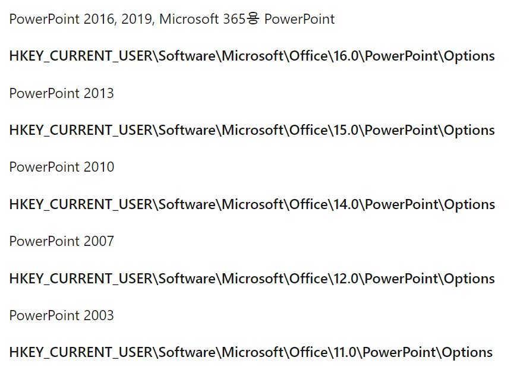

library(officer)
library(rvg)
library(ggplot2)
# 이미지 생성
plotObj <- iris |>
ggplot(aes(x = Sepal.Length, y = Sepal.Width, color = Species)) +
geom_point()
# ppt
read_pptx() |> # ppt 생성, 별도의 오브젝트로 저장하지 않아도 됨.
add_slide() |> # 슬라이드 추가
ph_with( # 이미지 추가
dml(ggobj = plotObj),
location = ph_location_fullsize()
) |>
print('image.pptx') # ppt 저장 개요
지난 게시글에서 officer 패키지를 활용해 R으로 만든 그림을을 벡터 이미지로 저장하는 방법을 다루었습니다. 이렇게 저장한 벡터 이미지는 확대를 해도 깨지지 않고 파워포인트에서 편집이 가능하다는 장점이 있습니다. 하지만 파워포인트 슬라이드를 그림으로 내보내기하면 저해상도의 이미지로 저장된다는 문제가 있습니다. 따라서 이번 글에서는 파워포인트로 저장한 벡터 이미지를 300DPI의 고해상도로 내보내는 방법을 알아보고자 합니다.
DPI란?

DPI란 Dot Per Inch의 약자로, 인쇄물에서 1인치(= 2.54cm)에 몇 개의 점이 찍히는지를 나타내는 단위입니다. DPI 값이 높을 수록 고해상도의 결과물을 얻을 수 있으며, 깨끗한 이미지를 얻기 위해서는 300DPI 이상이 권장됩니다.
고해상도로 슬라이드 내보내기
1. officer 패키지를 사용해 파워포인트로 이미지 저장하기
우선 지난 게시글에서 다루었던 officer과 rvg 패키지를 활용해 벡터 이미지를 파워포인트로 저장하겠습니다.
파워포인트의 파일 탭에서 다른 이름으로 저장/이미지로 저장을 선택하면 슬라이드가 각각 JPEG 파일로 저장됩니다. 저장된 이미지의 속성을 살펴보면 파워포인트 이미지 내보내기의 디폴드 해상도인 96DPI로 저장된 것을 확인할 수 있습니다.


2. 내보내기 해상도 설정 변경하기
슬라이드를 고해상도 이미지로 저장하려면, 파워포인트의 내보내기 해상도 설정을 변경해야 합니다. 설정을 변경하기에 앞서, 모든 Windows 기반 프로그램을 종료하시길 바랍니다. 실행 중인 프로그램은 Ctrl + Shift + ESC 단축키를 통해 확인할 수 있습니다.
시작 단추를 우클릭한 뒤, 실행을 선택합니다.
열기 상자에 regedit을 입력한 다음 확인을 선택합니다.
-
사용 중인 파워포인트 버전에 따라 아래 레지스트리 하위 키를 찾습니다.
파워포인트 버전별 레지스트리 하위 키는 다음과 같습니다.

Option 하위 키를 선택하고, 편집 탭의 새로 만들기/DWORD(32비트) 값을 선택합니다
ExportBitmapResolution을 입력한 다음 엔터키를 누릅니다.
ExportBitmapResolution이 선택되어 있는지 확인한 다음 편집 탭의 수정을 선택합니다.
DWORD 값 편집 대화 상자에서 10진수를 선택한 뒤, 값 데이터에 300을 입력하고 확인을 선택합니다.

- 파일 메뉴에서 끝내기를 선택해 레지스트리 편집기를 종료합니다.
3. 슬라이드를 고해상도 그림으로 내보내기
앞서 저장했던 파워포인트 파일을 다시 열어 파일 탭의 다른 이미지로 저장/이미지로 저장을 선택해 다시 슬라이드를 JPEG 파일로 저장합니다. 이번에는 300DPI의 고해상도 이미지로 잘 저장된 것을 확인할 수 있습니다.


정리
이번 글에서는 레지스트리 편집기에서 해상도 설정을 변경하여 파워포인트 슬라이드를 고해상도 이미지로 내보내는 방법에 대해 알아보았습니다. officer 패키지를 다룬 지난 글과 함께 R을 통해 이미지를 자유자재로 다루는 데 도움이 되기를 기대합니다.
Reuse
Citation
BibTeX citation:
@online{han2023,
author = {Han, Jihee},
title = {R로 {만든} {PPT} {슬라이드} {고해상도로} {저장하기}},
date = {2023-09-27},
url = {https://blog.zarathu.com/posts/2023-09-27-high-dpi-slide},
langid = {en}
}
For attribution, please cite this work as:
Han, Jihee. 2023. “R로 만든 PPT 슬라이드 고해상도로
저장하기.” September 27, 2023. https://blog.zarathu.com/posts/2023-09-27-high-dpi-slide.